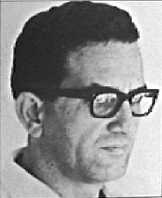

Si buscamos en el diccionario más prestigioso y completo de música, el Grove’s Dictionary of Music and Musicians, en la entrada "Venezuela" donde el musicólogo Gerard Behàgue expone los rasgos más importantes del desarrollo de la música académica del país, se termina el texto anunciando la llegada a Venezuela de un prominente compositor griego, Yannis Ioannidis a principios de la década de los setenta. Dato extraño que la música venezolana concluya hasta la fecha de cierre del diccionario con un griego de reputación internacional que decide vivir en Venezuela. Behàgue aclara que la actividad de la música contemporánea debe haber estado muy activa para que un compositor de la talla de Ioannidis se mude a ese país.
Pero lo cierto fue que Ioannidis se enamoró
de Nilyan Pérez, una pianista venezolana,
cuando ambos estudiaban en la
Escuela Superior de Música de Viena. El amor es uno de
los motivos de cambio más poderoso y
pudo lograr que un hombre alterara su escenario
de acción en acto suicida para su
carrera. En 1968, Ioannidis encontró un ambiente musical
enrarecido, en el declive del
maestro de maestros, Vicente Emilio Sojo. La fuerza del
movimiento tutelado por Sojo ya
estaba desvaneciéndose y la música se encontraba en un
estado de desinformación grave
frente a los acontecimientos y desarrollos de lenguaje del
primer mundo, un atraso de por lo
menos sesenta años y por otro lado una ausencia de
actividad en la composición que
generara un idioma nuevo y representativo.
Ioannidis entendió de inmediato su misión,
sacrificando con esta toma de consciencia su
propia carrera y emprendió una
campaña lenta y silenciosa pero constante y profunda, de
enseñanza de la composición dentro
de la Escuela de Música Juan Manuel Olivares en
1974. Agradecemos a la Profesora Ana
Mercedes Asuaje de Rugeles, directora de la escuela
en ese momento, por su visión y
entendimiento de albergar este taller de composición
dictado por un ser extraño que causó
la envidia y rechazo directo por parte de la mayoría
de los profesionales del momento. Se
amplió el marco de las clases abriendo adicionalmente
un curso de extensión dentro de la
Universidad Metropolitana, en torno al cual se reunió un
grupo extenso de muchachos que hoy
en día forman parte de la mayoría y de las
principales personalidades activas y
creadoras de la música profesional académica. El
desarrollo de estos talleres duró
hasta 1976 cuando Ioannidis se vió cercado por la
resistencia al cambio y envidia del
statu quo musical del momento. Volvió a Atenas con
toda su familia donde mantiene una
actividad de composición, enseñanza, dirección de
orquesta, y dirección del
Conservatorio de Atenas.
Ioannidis sembró en todos sus alumnos una
actitud de seriedad y compromiso hacia la
composición, casi de fanatismo
espiritual, al mismo tiempo de establecer la consciencia de
una referencia histórica de la
creación como eslabón dentro del encadenamiento de la
música en occidente. Al contrario
de las acusaciones de sus enemigos, Ioannidis no enseñó
el último grito de la moda de
vanguardia europea en composición, para ser adoptada en
consumo por los salvajes que quieren
aparentar la novedad. No, él enseñó cabalmente el
pasado para no repetirlo, ya que
esta actitud de respeto estilístico conduciría al compositor
a su momento en el presente y a la
búsqueda de su propio estilo. Era una actualización
histórica que nos llevaría hasta el
presente de nosotros mismo.
Antes de irse, junto a Eduardo Lira Espejo,
Alfredo del Mónaco y la muchachada
envenenada con creatividad y ganas
de producir, se fundó en 1975 la Sociedad Venezolana
de Música Contemporánea, SVMC,
filial sección de la Sociedad Internacional de Música
Contemporánea SIMC. Esta agrupación
generó conciertos de música producida en los
talleres de composición arriba
mencionados, a través de la Orquesta de Cámara de la Radio
Nacional de Venezuela, dirigida por
Ioannidis y creada por iniciativa de Alfredo Gerbes. La
SVMC tuvo logros significativos en
su primer año de existencia con la ejecución de las
piezas Alborada de Emilio
Mendoza y Solentiname de Alfredo Del Mónaco en el
Festival de la SIMC "Días Mundiales
de la Música" en Boston, 1976, siendo la primera vez
que Venezuela aparecía representada
en esta plataforma internacional.
Con la partida de Ioannidis, el grupo de
compositores entendió su próxima misión con
claridad: había que conseguir
títulos de instituciones superiores ya que sin éstos nuestra
inserción en el proceso de
renovación del país, y la misma existencia, iba a ser difícil
sin esta
acreditación. La mayoría de los
integrantes del grupo consiguió becas, gracias a una
Venezuela rica del momento, a
FundaAyacucho y al CONAC, y se profesionalizó con
estudios en Alemania, Inglaterra,
Francia y en los Estados Unidos. Los músicos así
formados regresaron y están ya casi
todos en el país, incorporados a la actividad musical
profesional.
No obstante, la Sociedad SVMC se quedó
adormecida por 24 años hasta el presente, no sin
lograr mandar exitosamente algunas
piezas a los festivales anuales de la SIMC. El interés del
desarrollo musical del país se volcó
hacia la ejecución orquestal por parte del sistema de
orquestas juveniles, dejando
desamparado, a pesar de las fortunas que se manejaron en los
25 años de ese organismo, al sector
creativo de la música.
La culpa es nuestra: por no habernos
reunidos, organizados, por no tener consciencia de
grupo y de participación
voluntaria y colectiva. Pero la ausencia de estas virtudes es
característica de la moral y del
sentido común del venezolano de hoy, es decir, ya no
forman parte integral de nuestra
esencia, las hemos perdido. Sabemos que las virtudes
de comunidad son imprescindible para
formar nuestra nueva sociedad, tanto civil como
musical, el cultivo de los
valores de acción mútua.
La muchachada de Ioannidis ya creció y somos
grandes, personas adultas. Nos toca por
orden generacional, hacer algo por
el país, dedicarle nuestros esfuerzos sin pedir, ni exigir,
ni esperar retorno inmediato, quizás
sólo para los que vengan después de nosotros. No nos
podemos quedar de brazos cruzados en
arrogante queja ni amargarnos por la realidad.
Hacer, y con fuerza. Nos toca.
La bella durmiente SVMC acaba de arrancar
con una directiva nueva del punto de vista generacional:
Alfredo Rugeles, presidente; Adina
Izarra, vicepresidenta; Emilio Mendoza, secretario
general; Diana Arismendi, tesorera,
Albert Hernández, Luis Alejandro Álvarez y Alfredo
Marcano, vocales. Plan de
acción: lograr una infraestructura y un espacio cultural
para los
compositores, cohesionar al sector,
exigir la difusión de las obras por parte de las orquestas
y agrupaciones instrumentales y
corales auspiciados por el estado, promulgar la Ley de
Difusión, Educación y Auspicio a la
Creación del Arte Musical Venezolano que ha estado
en elaboración desde el año pasado.
Otros proyectos para este año incluyen realizar una
edición de partituras y discos
compactos de nuestros compositores vivientes, realizar un
concurso para jóvenes solistas de
obras nuevas de compositores venezolanos, ciclo de
charlas "Conoce a tu Compositor",
lecturas orquestales de nuevas obras para orquesta, la
Ruta Nacional de Nueva Música,
proyecto adelantado por la Dirección de Artes Auditivas
en manos de Teresa Hernández que
distribuye las partituras a las agrupaciones de todo el
país y auspicia la asistencia del
compositor en la ejecución de la obra. La SVMC desea
auspiciar el Festival
Latinoamericano de Música en noviembre, punto principal de
encuentro de los compositores del
continente y concretar el archivo documental. En este
momento si una persona se interesa
por tocar alguna pieza de un compositor venezolano no
hay ninguna manera para que
esta persona pueda saber quién compuso qué, cuándo y
cómo se puede conseguir la
partitura. Esta es una de las razones porque no tocan nuestra
música, ya que todavía permanecemos
invisibles a la sociedad. Desde hace 25 años.